まもなく始まります
できればお顔出しを
表情が見えると、話しやすくなります
お名前は申込時のお名前に
出欠の確認に使います
顔出しできない方は
お名前の前に耳マークを
例：👂 山田太郎
あたたかいリアクションを
うなずき・拍手・チャット大歓迎です
BGM：魔王魂
一人で抱えない働き方
岡崎かつひろ
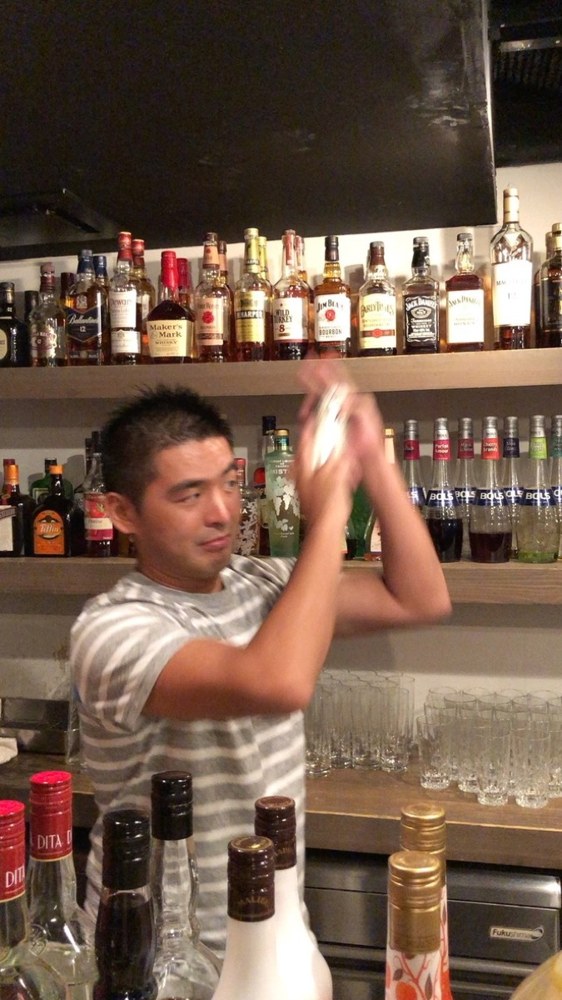
作家・講演家
岡崎かつひろ
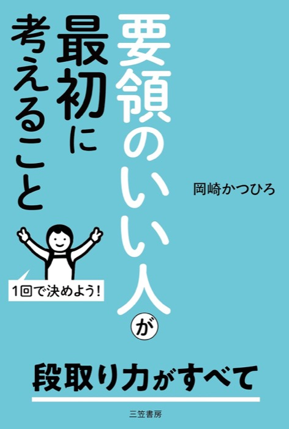
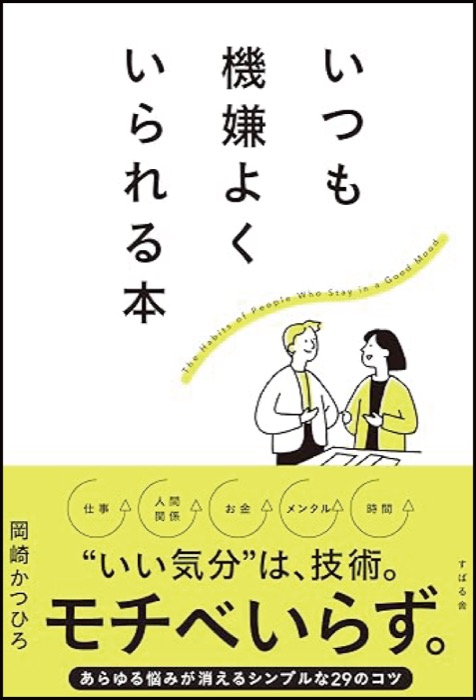
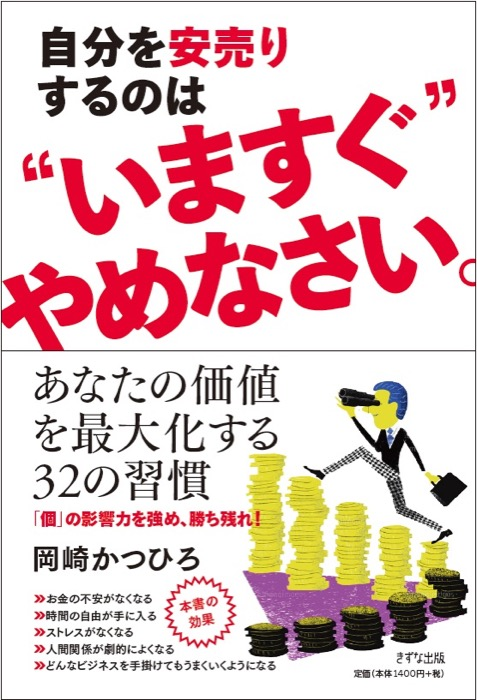
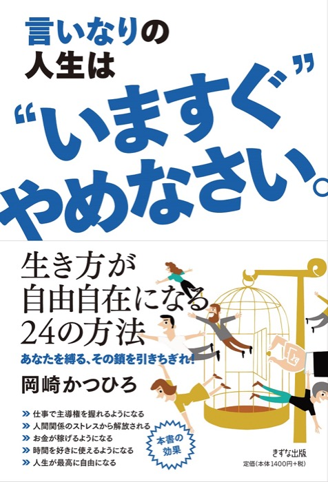
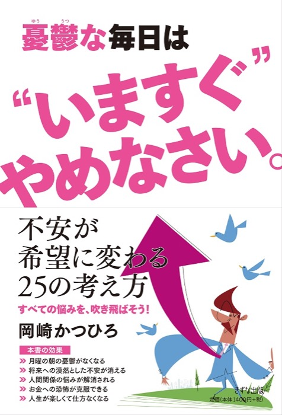
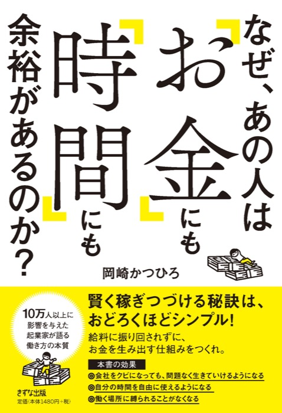
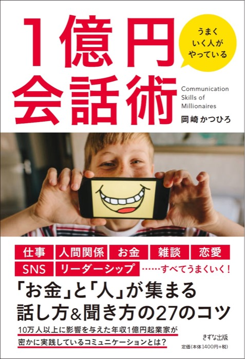
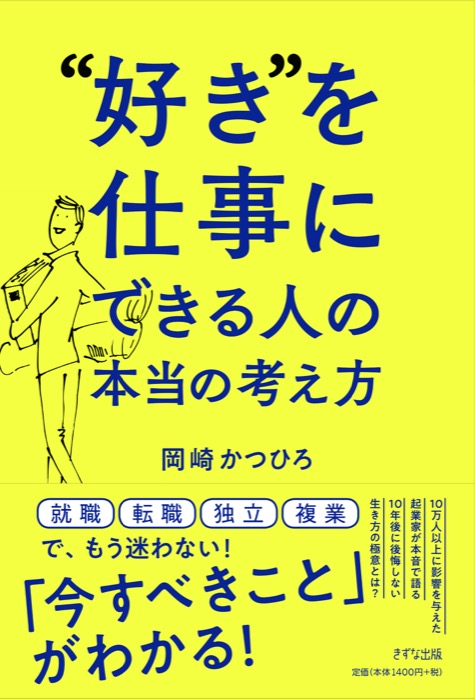
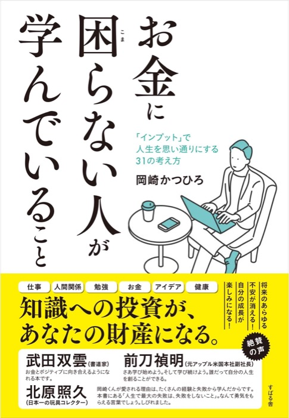
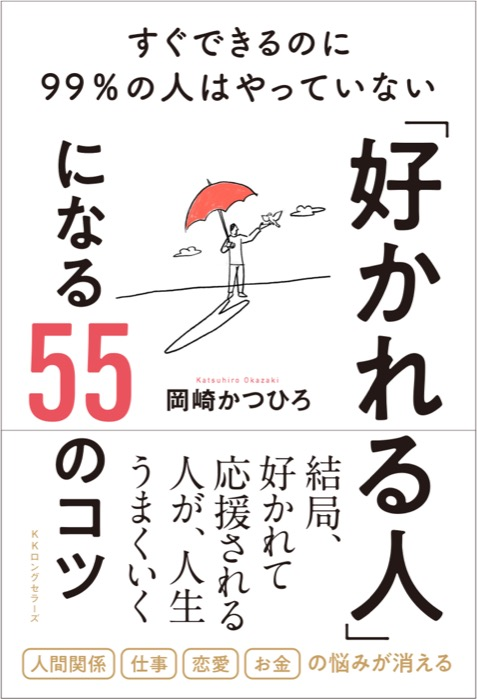
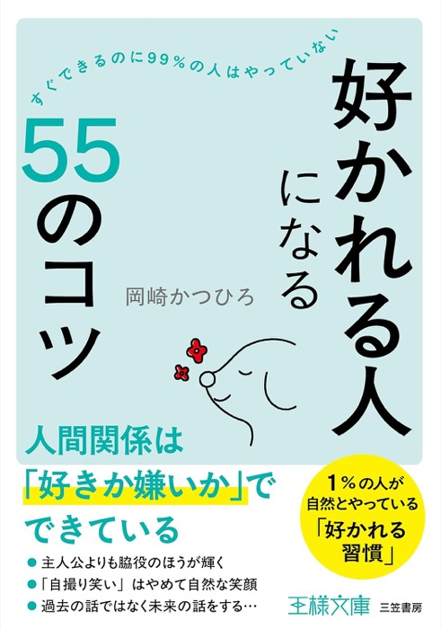
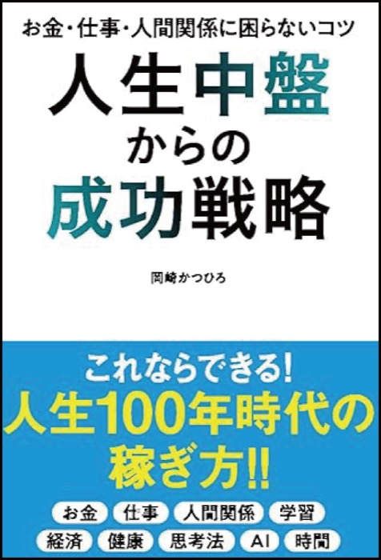
最後に「助けて」と
言ったのは、いつ？
今日のテーマ
頼る力
1
頼るのは
弱い？
甘え？
迷惑？
頼られたとき
迷惑でしたか？
むしろ、うれしかった
頼れずに一人で抱えて苦しかった経験
（ここにご自身の写真と話を入れる）
2
上と下に、はさまれる
「できない人」と
思われそう
自分でやった
ほうが早い
評価が
下がりそう
一人で抱えて
いるものを
3つ書く
3
頼ることは
活躍の場を渡すこと
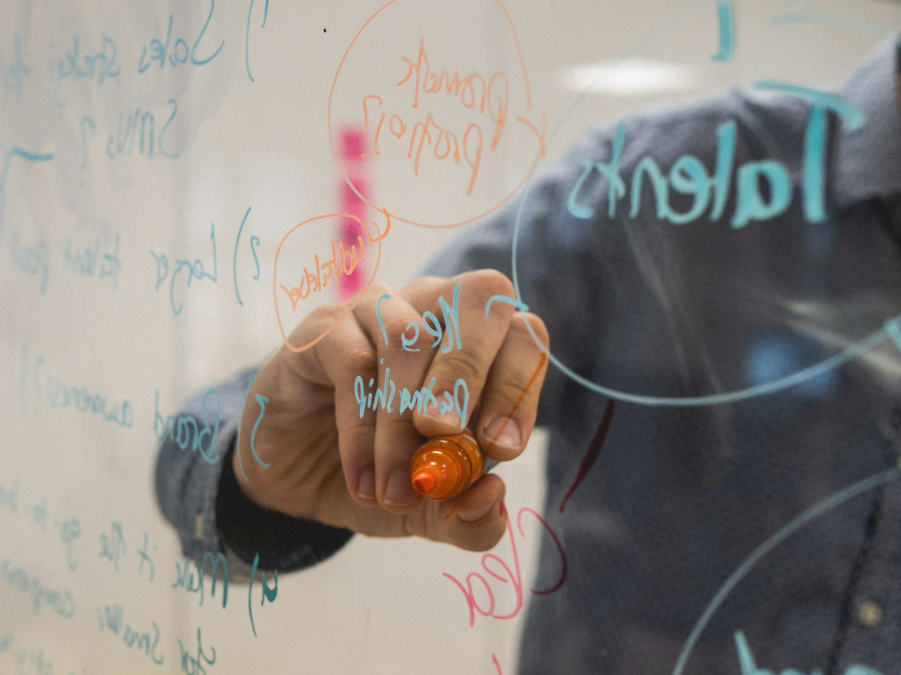
目的だけ伝えて
やり方は任せる
苦手を
先に打ち明ける
「ありがとう」を
言葉にする
部下に頼ってうまくいった／失敗した話
（ここにご自身の写真と話を入れる）
4
上司は、困っていることを
知らないと
助けようがない
悪い話ほど
早く伝える
選択肢を
持っていく
「どうしましょう」ではなく
「A案とB案、どちらに？」
結果まで
報告する
上司に早めに頼って助かった話
（ここにご自身の写真と話を入れる）
誰に
何を頼む？
1つ選んで
明日やることを決める
まとめ
頼る力は
弱さではなく、仕事の技術
頼れる人のまわりには、人が集まる
明日、「助けて」と
言ってみよう
質疑応答
ありがとうございました